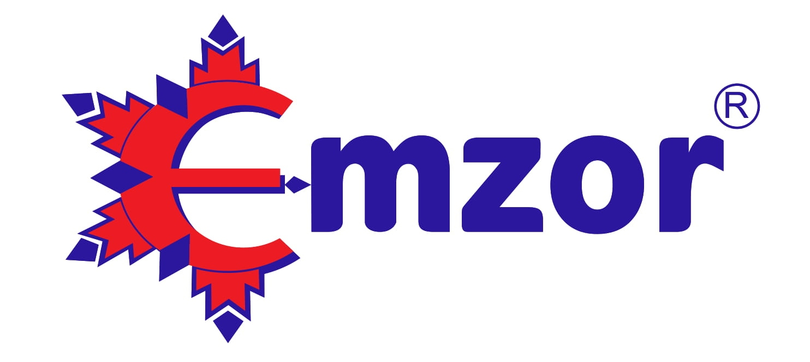
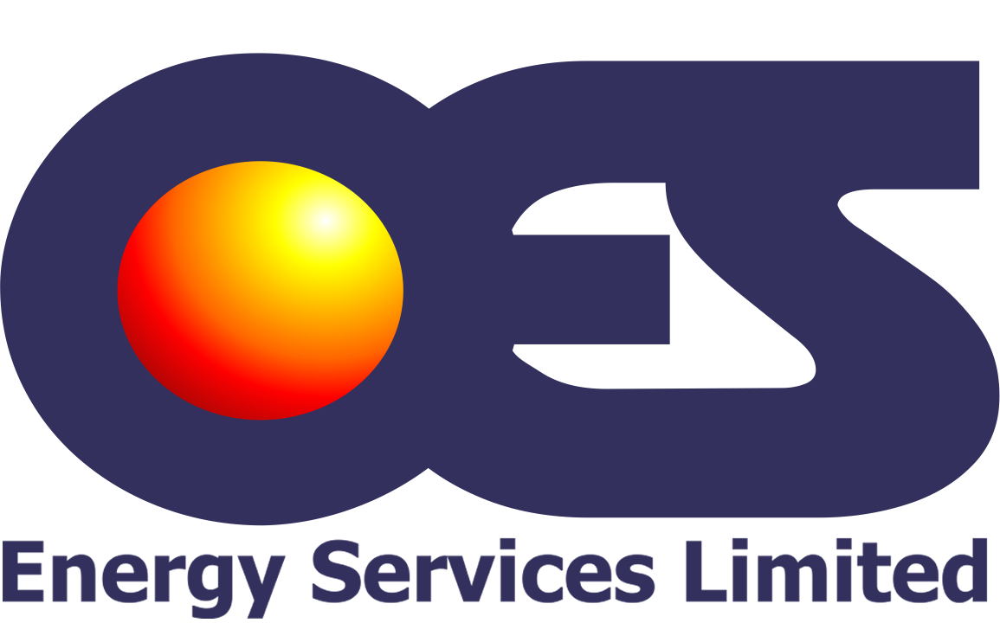
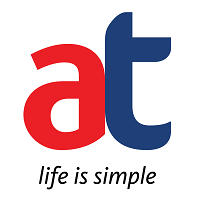
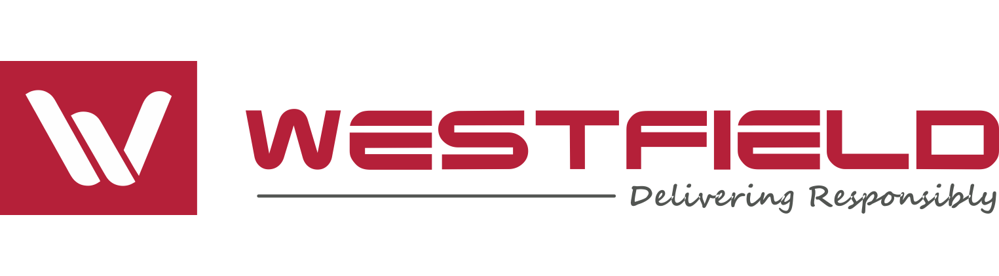
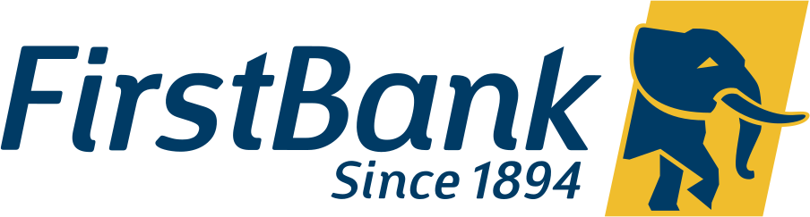
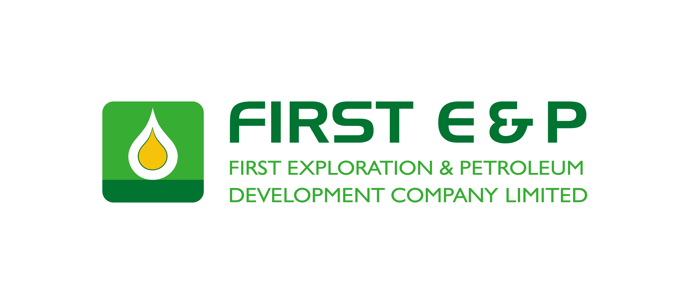

.png)






We implement and manage ERP environments for enterprises where executive oversight is non-negotiable






"They have delivered high-quality solutions on time, communicated effectively with stakeholders, and approached challenges with practical, well-reasoned recommendations."
"They consistently went beyond contractual obligation to ensure we achieved the best outcomes."
We analyze your current business processes to align them perfectly with Oracle ERP Cloud or specific Oracle applications. Our team manages the entire lifecycle—from configuration and transition to training and change management—ensuring your new solution delivers high-impact results from the moment you go live.
We conduct comprehensive health checks for existing E-Business Suite, Siebel, and JD Edwards implementations to boost performance. Whether you want to optimize your current on-premise investment or transition seamlessly to the cloud, we provide the expertise needed to modernize your operations and maximize ROI.

With over 40 years of expertise in IT, Finance, and Engineering, we design Enterprise Solution Architecture that integrate seamlessly with your application landscape, we ensure every new implementation aligns with your strategic goals and functions in perfect harmony with your current environment.
In sectors like Oil & Gas, Utilities, and Financial Services, we align software solutions with specific industry requirements and shared services structures. Our Quality Assurance team meticulously benchmarks implemented solutions against your original requirements to identify and close gaps. This rigorous approach ensures every project is delivered on time, within budget, and fully optimized for your organization's needs.

Our application support model follows industry best practices to consolidate and standardize your IT services, eliminating operational redundancies. We provide comprehensive Level 1 and 2 support, acting as a seamless bridge to OEMs when advanced intervention is required. This ensures your systems remain stable, efficient, and highly responsive to your business needs.
To help you scale and control costs, we offer a flexible model that brings predictability to your IT spend. Beyond standard maintenance, our team delivers technical expertise for custom extensions, reporting, and external integrations. This approach reduces operational overhead while allowing you to retain control over strategic goals, making us the partner of choice for long-term efficiency.
Every engagement begins with a rediness assessment. We identify and plug gaps before the transformation journey starts.
Executive alignment precedes configuration. We co-design the delivery framework with your leadership team.
Structured delivery with budget discipline, risk-managed go-lives, and ongoing executive visibility throughout.
Structured reporting continues beyond go-live. We embed performance monitoring and continuous improvement into your operations.
We do not just configure systems.
We structure enterprise transformation.
Most firms deploy software.
We design operational discipline.

WE OPERATE CONFIDENTLY IN REGULATED, ASSET-INTENSIVE, AND COMPLIANCE-DRIVEN ENVIRONMENTS.
Tekafriq operates with zero tolerance for corruption, full transparency in engagements, and strict compliance with anti-bribery and governance standards.
We protect our clients' reputations as seriously as our own.
If control gaps exist, they compound.
If they compound, they surface at board level.
The only question is when.